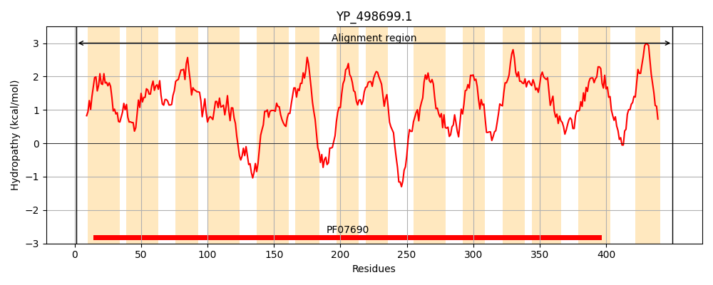
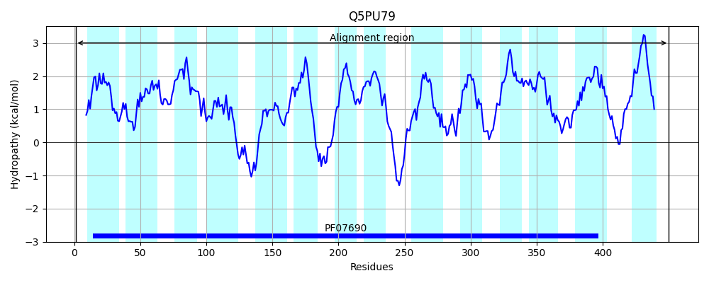
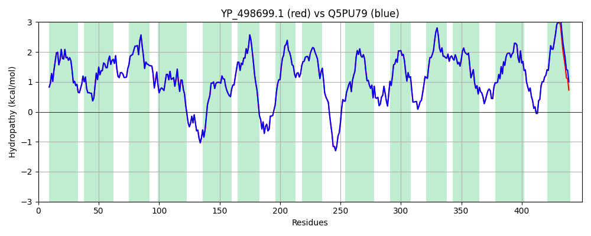

Hit Accession: Q5PU79
Hit TCID: 2.A.1.3.22
Hit Description: gnl|BL_ORD_ID|14452 gnl|TC-DB|Q5PU79|2.A.1.3.22 Tetracycline resistant protein Tet38 - Staphylococcus aureus.
Mach Len: 450
e:0.000000
Query TMS Count : 14
Hit TMS Count: 14
TMS-Overlap Score: 15.100000
Predicted Substrates:CHEBI:9474;tetracycline, CHEBI:27902;tetracycline
BLAST Alignment:
Score: 2199 , Bit scores: 851 bits, E-value: 0.0e+00, Alignment length: 450, Percentage identity: 100
Query: 1 MNVEYSKIKKAVPILLFLFVFSLVIDNSFKLISVAIADDLNISVTTVSWQATLAGLVIGIGAVVYASLSDAISIRTLFIYGVILIIIGSIIGYIFQHQFPLLLVGRIIQTAGLAAAETLYVIYVAKYLSKEDQKTYLGLSTSSYSLSLVIGTLSGGFISTYLHWTNMFLIALIVVFTLPFLFKLLPKENNTNKAHLDFVGLILVATIATTVMLFITNFNWLYMIGALIAIIVFALYIKNAQRPLVNKSFFQNKRYASFLFIVFVMYAIQLGYIFTFPFIMEQIYHLQLDTTSLLLVPGYIVAVIVGALSGKIGEYLNSKQAIITAIILIALSLILPAFAVGNHISIFVISMIFFAGSFALMYAPLLNEAIKTIDLNMTGVAIGFYNLIINVAVSVGIAIAAALIDFKALNFPGNDALSSHFGIILIILGLMSIVGLVLFVSLNRWTQSEK 450
MNVEYSKIKKAVPILLFLFVFSLVIDNSFKLISVAIADDLNISVTTVSWQATLAGLVIGIGAVVYASLSDAISIRTLFIYGVILIIIGSIIGYIFQHQFPLLLVGRIIQTAGLAAAETLYVIYVAKYLSKEDQKTYLGLSTSSYSLSLVIGTLSGGFISTYLHWTNMFLIALIVVFTLPFLFKLLPKENNTNKAHLDFVGLILVATIATTVMLFITNFNWLYMIGALIAIIVFALYIKNAQRPLVNKSFFQNKRYASFLFIVFVMYAIQLGYIFTFPFIMEQIYHLQLDTTSLLLVPGYIVAVIVGALSGKIGEYLNSKQAIITAIILIALSLILPAFAVGNHISIFVISMIFFAGSFALMYAPLLNEAIKTIDLNMTGVAIGFYNLIINVAVSVGIAIAAALIDFKALNFPGNDALSSHFGIILIILGLMSIVGLVLFV LNRWTQSEK
Sbjct: 1 MNVEYSKIKKAVPILLFLFVFSLVIDNSFKLISVAIADDLNISVTTVSWQATLAGLVIGIGAVVYASLSDAISIRTLFIYGVILIIIGSIIGYIFQHQFPLLLVGRIIQTAGLAAAETLYVIYVAKYLSKEDQKTYLGLSTSSYSLSLVIGTLSGGFISTYLHWTNMFLIALIVVFTLPFLFKLLPKENNTNKAHLDFVGLILVATIATTVMLFITNFNWLYMIGALIAIIVFALYIKNAQRPLVNKSFFQNKRYASFLFIVFVMYAIQLGYIFTFPFIMEQIYHLQLDTTSLLLVPGYIVAVIVGALSGKIGEYLNSKQAIITAIILIALSLILPAFAVGNHISIFVISMIFFAGSFALMYAPLLNEAIKTIDLNMTGVAIGFYNLIINVAVSVGIAIAAALIDFKALNFPGNDALSSHFGIILIILGLMSIVGLVLFVILNRWTQSEK 450 | Protein Hydropathy Plots: |
|---|
|  |  |
Pairwise Alignment-Hydropathy Plot:
|
|---|
|  |